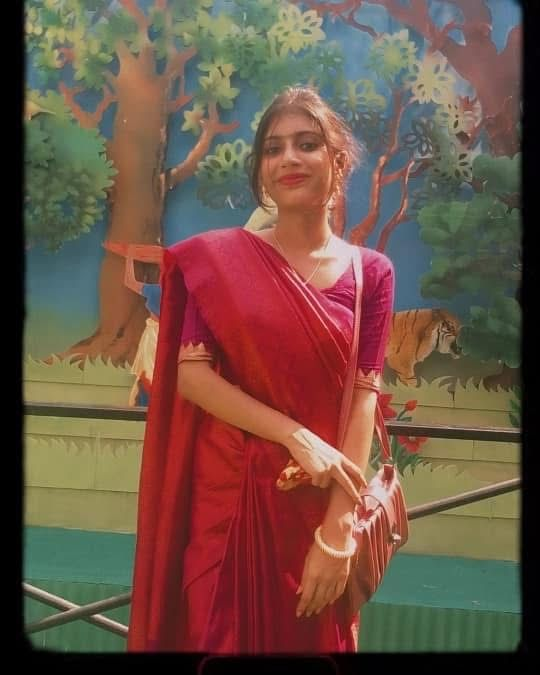
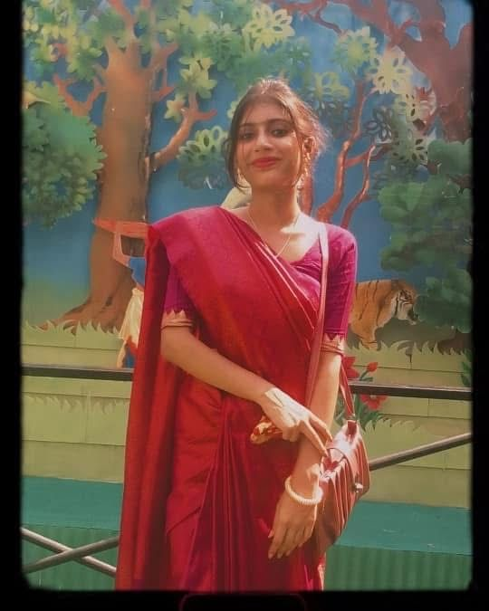

Happy Birthday! madamji 🎀💗᪲᪲᪲
From first day I saw you in college, I never knew that a quiet “You’re from section A, right?†would become the start of something so beautiful.
We didn’t talk much at first just exchanged glances that spoke louder than words. And somewhere between helping you with small things, laughing over random texts, and those long conversations, you became someone I can’t imagine my days without.
You once said “Ato sad thakbina sobsomoi†and from that day, I’ve tried to live up to those words, because your voice, your smile, and your presence have a way of making even the dullest moments feel warm.
Ananya, you’re not just a person to me you’re a feeling I never want to lose.
If life ever gives me the chance, I want to hold your hand, share your peace and your chaos, and take the responsibility of keeping that smile on your face every single day.
You’ve taught me that love isn’t always about confession; sometimes, it’s about quietly being there, even when no one notices.
So today, on your birthday, I just want to say
You deserve every bit of happiness, love, and calm in this world.
And if destiny ever allows, I wish I get to be the one who gives it to you.
Happy Birthday, Ananya.
From Diptiman, who’ll always care for you, no matter what. ❤️
 
